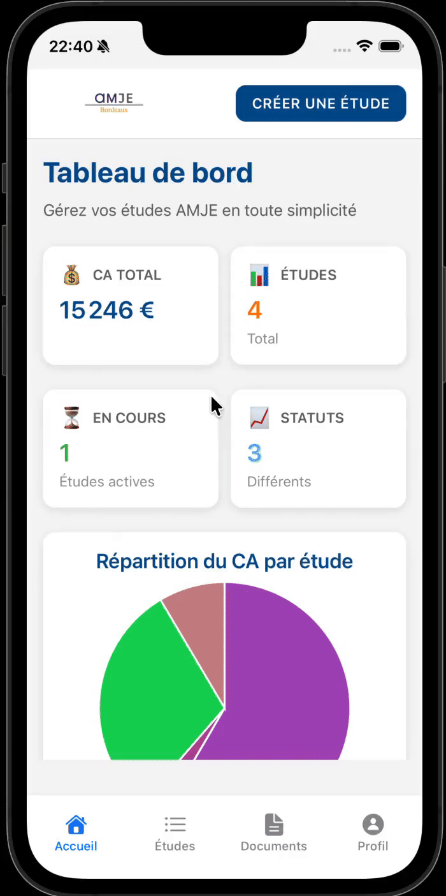
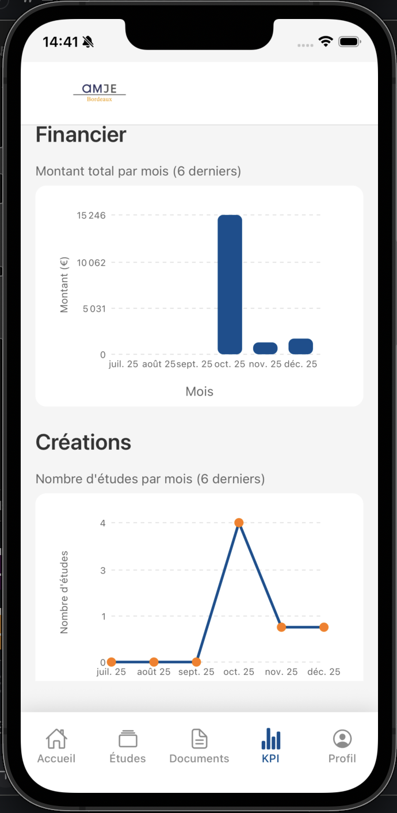
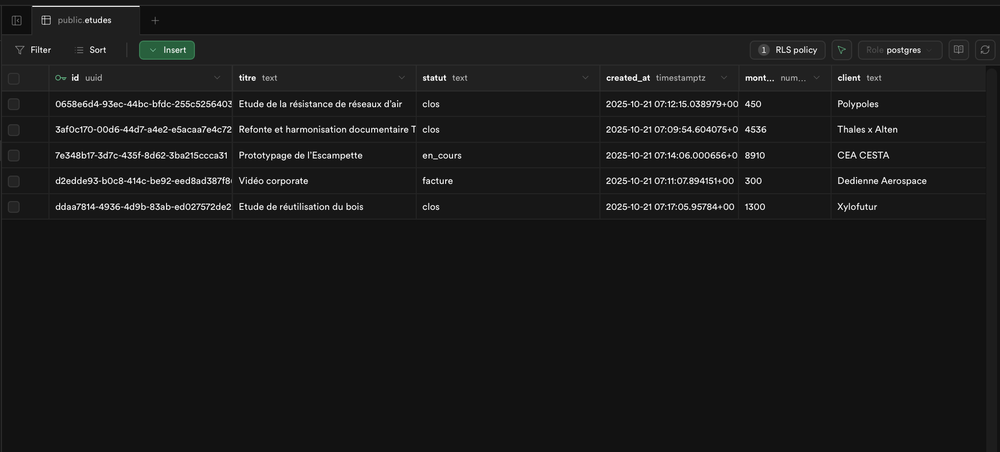

AMJE Bordeaux — Mobile App (Expo + Supabase)
Objective
- Designed an internal mobile application to simplify how AMJE Bordeaux manages its consulting studies
- Brought project tracking, study statuses, and KPIs together into a single, clear interface
- Set up realtime updates so everyone always sees the same information
Tools & Languages
-
 Expo
Expo
-
 TypeScript
TypeScript
- Java
- SQL
Project Overview
- Developed a mobile app used internally by AMJE Bordeaux members on a daily basis
- Built features to create studies, update their status, and track their progress over time
- Connected the frontend to a realtime backend to display KPIs live as data changes
- Implemented realtime create, update, and delete actions to keep study data consistent for all users

Dashboard & KPIs
- Built a dashboard showing key numbers like total revenue, number of studies, and recent activity
- Made sure KPIs update instantly across devices using realtime synchronization
- Designed a consistent data model to represent studies and their lifecycle
- Enabled realtime synchronization so every update is instantly reflected across devices

Tech Stack
- Developed the frontend using Expo and React Native with TypeScript
- Handled navigation and screen structure with Expo Router
- Built the backend on Supabase using PostgreSQL and realtime features

Results
- Centralized all study-related information in a single tool used by the whole team
- Reduced back-and-forth and delays during study reviews and validations (-50% in 4 months)
- Made it easier to manage more studies at the same time without losing visibility